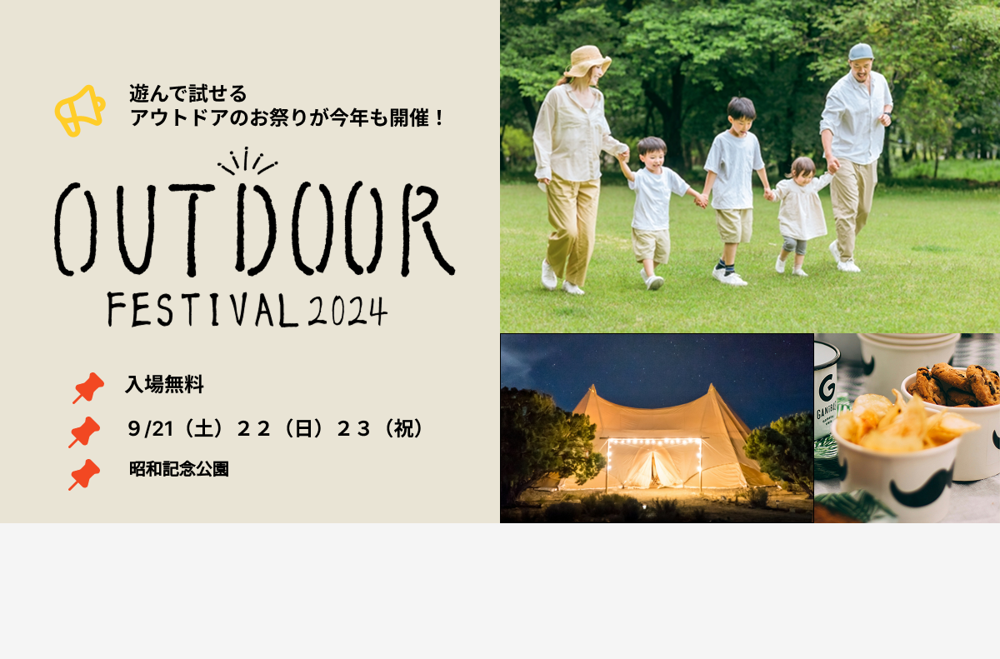

アウトドアイベントのLPバーナーです。
担当
デザイン
サイトの目的
集客
使用技術
Figma
デザインについて
家族で楽しめるアウトドアイベントの雰囲気が直感的に伝わるよう、あたたかく親しみやすいデザインを意識しました。メインビジュアルには自然の中で笑顔で過ごす家族の写真を大きく配置し、ターゲットであるファミリー層への安心感と楽しさを視覚的に訴求。タイトルロゴ「OUTDOOR」の手描き風フォントは、自然やナチュラル感を演出することでアウトドアらしさを強調しつつ、イベントのワクワク感も表現しています。また、情報部分はピクトグラム（ピンアイコン）を用いて視認性と親しみやすさを両立し、日付・会場・入場無料の3点がすぐに伝わるよう設計しました。右下には夜の会場やフードの写真を配置することで、日中だけでなく夜も楽しめること、食の充実度も視覚的に伝えています。